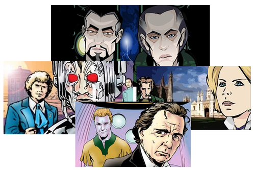
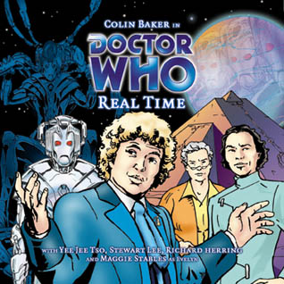
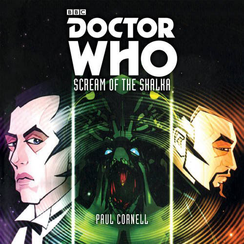
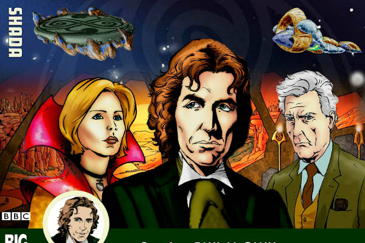
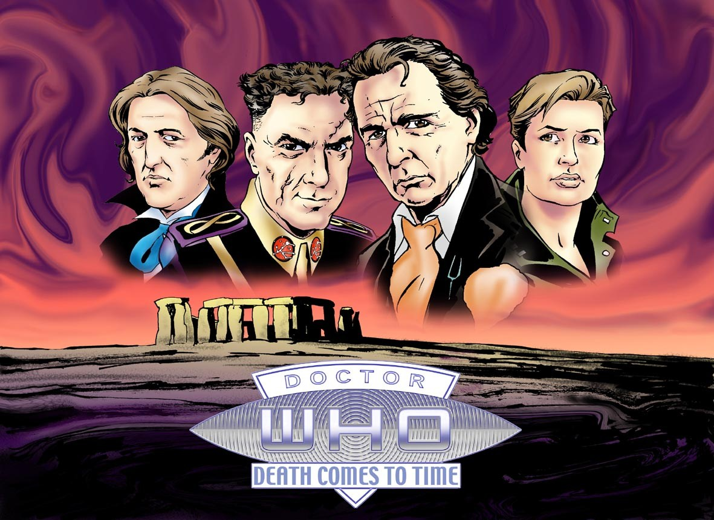

WebCasts
Após os anos 2000, nos primórdios da internet, o site da BBCI começou a produzir webcasts, que são histórias de Doctor who em animações distribuídas online. São poucas as histórias, mas todas são excelentes no quesito roteiro e arte.
Algumas animações são ótimas e tem um ritmo de reprodução e efeitos muito bons, já algumas nos lembram um pouco as recons, com apenas o áudio e imagens estáticas, mas nada que nos impeça de acompanhar, aproveitar e entender cada história.
Real Time
Real Time (Tempo Real) é uma aventura inédita do 6º Doutor, aqui em seu uniforme azul, acompanhado de Evelyn Smythe, uma companheira original dos áudios deste Doutor na Big Finish. Produzida pela BBC em parceria com a Big Finish Productions, a animação foi ao ar no site da BBCI no dia 2 de Agosto de 2002.
ELENCO:
6º Doutor – Colin Baker
Evelyn Smythe – Maggie Stables
Dr. Reece Goddard – Yee Jee Tso
Cyber-Controlador – Nicholas Briggs
Professor Osborn – Nicholas Briggs
FICHA TÉCNICA:
Roteiro e Direção: Garry Russel
Produção: Jason Haigh-Ellery e Jacqueline Rayner
Arte: Lee Sulivan
LEGENDAS:
Tradução e Sincronia: Lucas Harkness
Revisão: F.B Cavalcante
Assistir Online (Legendado)
Scream of the Shalka
Em 2003 Doctor Who fazia 40 anos. Fora do ar desde 1989, com apenas um filme para a TV em 1996, a série ainda não via esperança de qualquer retorno próximo.
Por se tratar do aniversário da série, todos queriam fazer algo especial, e assim surgiu Scream of The Shalka (O Grito do Shalka). Esta animação marca a aparição de um novo Doutor, dublado por Richard E. Grant (forma corpórea da Grande Inteligência na 7ª Temporada e o 10º Doutor no especial The Curse of Fatal Death). E para ser ainda mais especial, convidaram Paul Cornell (roteirista dos episódios “Father’s Day” e “Human Nature/Family of Blood” além de diversos livros, quadrinhos e audiodramas de Doctor Who) para escrever o roteiro do novo especial de aniversário.
A animação traz também o vilão e amigo do Doutor, o Mestre, aqui interpretado por Derek Jacobi, que mais tarde interpretaria o mesmo personagem na 3ª temporada da Série Nova.
Como esta animação era a única produção oficial de Doctor Who pela BBC desde o filme de 96, acabou sendo considerada canônica pelo público. Mas com a volta da série para as telas em 2005, e com Christopher Eccleston assumindo o papel de 9° Doutor oficialmente, o webcast saiu do cânone de Doctor Who, passando o Doutor de Richard Grant a ser conhecido por Doctor-Shalka (Doutor-Shalka).
Sinopse:
A TARDIS se materializa na vila de Lannet, em Lancashire. Um Doctor irritado, que aparentemente foi levado ao lugar contra sua vontade se depara com o lugar quieto. Os habitantes da vila vivem sob medo, com exceção de Alison Cheney. É a invasão dos Shalkas, que se preparam para algo maior.
ELENCO:
9º Doutor – Richard E. Grant
Alison Cheney – Sophie Okonedo
Dawnson – Conor Molon
Joe – Craig Kelly
Mestre – Derek Jacobi
FICHA TÉCNICA:
Roteiro: Paul Cornell
Direção: Wilson Milam
Produção: Muirinn Lane Kelly
Animação: Cosgrove Hall
LEGENDAS:
Tradução e Sincronia: Lucas Harkness
Revisão: Miss Herriot
OS EPISÓDIOS ABAIXO FORAM RETIRADOS DO DVD OFICIAL EM SUA VERSÃO BLURAY.
Parte 01
Assistir Online (Legendado)
Download (Legendado)
Parte 02
Assistir Online (Legendado)
Download (Legendado) Em Breve
Parte 03
Assistir Online (Legendado)
Download (Legendado) Em Breve
Parte 04
Assistir Online (Legendado)
Download (Legendado) Em Breve
Parte 05
Assistir Online (Legendado)
Download (Legendado) Em Breve
Parte 06
Assistir Online (Legendado)
Download (Legendado)
MKV legendado (x264):
Shada
O doutor tem uma série de assuntos inacabados. Reunido com seus velhos amigos Romana e K9, ele responde a uma convocação do professor Chronotis, um lorde do tempo aposentado que agora vive a vida acadêmica em uma faculdade de Cambridge.
Download (Legendado)
Assistir online (legendado)
Death Comes to Time
Assistir Online (Legendado)
Créditos dos links dos Videos, das imagens e Textos: Universo Who, Os Mestres de Luxor, Parceria Who e Senhor Secreto
Problemas ao baixar? Informe nos comentários!